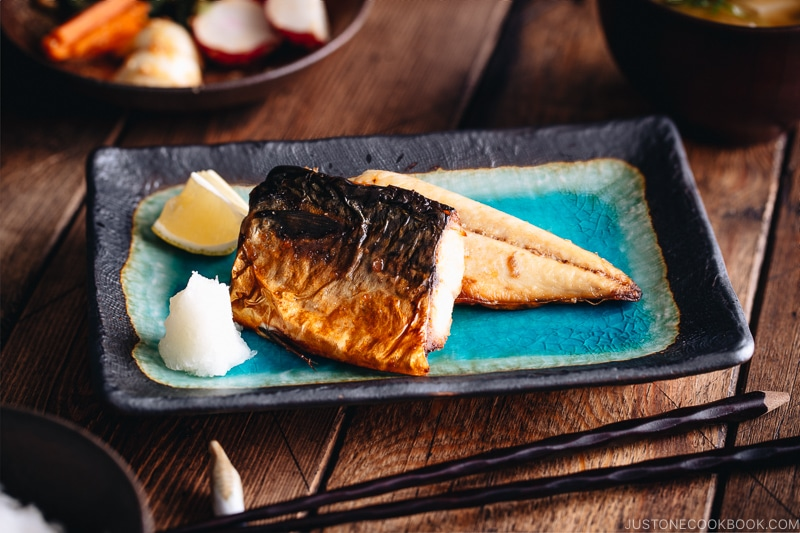

Saba Shio

A classic use of a delicious piece of salmon, perfect for any weeknight meal
Don't be fooled by the apparent lack of seasoning, this dish is a delight
The salmon is often grilled simply and served with various flavor bombs alongside
Rich cuts that are hard to process cleanly work perfectly here, such as the salmon collar
Ingredients
- Salmon: any cut suitable for grilling
- Salt
- Any appropriate accompaniments: soy sauce, wasabi, ginger, and plenty of sides
Directions
- Prep the salmon by cleaning whatever is necessary and portioning to serving sizes
- To ensure even flavor, try salting a day before and allowing to dry brine overnight in the fridge. Otherwise, salt immediately before grilling
- Pat the portion completely dry before beginning the cooking
- Grill your salmon: a broiler works well for indoor purposes, or a high heat grill can yield delicious results.
Whatever method you choose, just be sure that it cooks at high heat
- Serve your grilled salmon with sides and flavor additives. Rice and miso soup would be excellent accompaniments for a meal
Return to top
Return to all recipes